1.75-inch round AMOLED · 466 × 466
A round desk display for your AI assistant
The Compact shows your day on a 12-hour rim, puts your assistant's questions in front of you with up to three buttons, and listens while you hold a key.
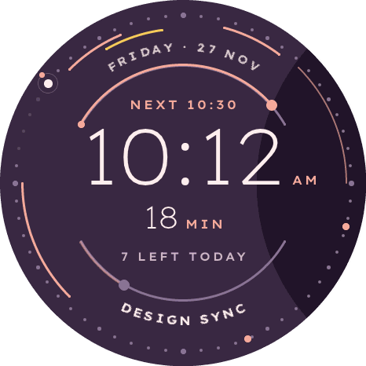
The Now face at a glance
Now is home: the time, the next appointment and the minutes until it, with the rest of the day around the edge.
The rim is a clock
A fixed 12-hour face. Moments sit on it as dots and arcs for the next 11 hours.
Now, with a second hand
The bright dot is the present; a small moon circles it once a minute.
Next and how long
The heading names the next busy Moment and the numerals count down to it.
Overlaps in amber
A clashing Moment moves to an inner lane and turns amber.
Free time left
The upper arc fills as the gap before the next Moment runs out.
The waking day
The lower arc runs 6 AM to 11 PM. Before ten it shows the weather.
The date, or busy until
The date when you are clear; "busy until" while a Moment runs.
Real daylight
A shaded crescent follows the sun. After sunset the glass turns black.
A Friday on the Compact
Six moments from one invented day, captured from the device itself.
-
8:41 AM
Leave-by and the weather
The upper arc turns amber and counts down to the time you have to leave. Until ten, the lower arc shows today's low, high and current temperature.
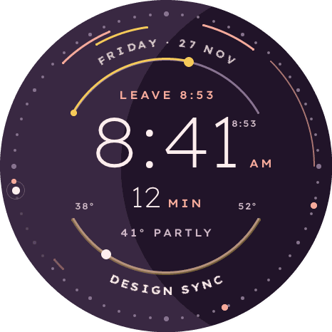
-
10:12 AM
The next meeting and its clash
Swipe right for the rest of the day. Design sync is next, and the vendor call overlaps it by 15 minutes, flagged in amber.
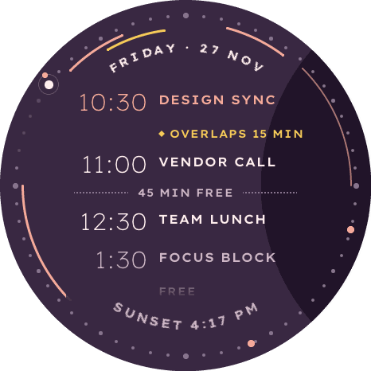
-
10:16 AM
Your assistant needs an answer
A decision takes the glass in periwinkle. The draft is quoted word for word, and nothing is sent until you review it and hold to confirm.
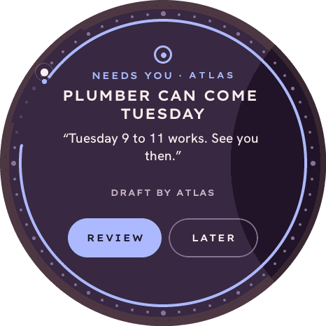
-
1:20 PM
Free time stays free
The focus block is marked free. It sits on the rim as an outline and never counts as busy, so there is no countdown to it.
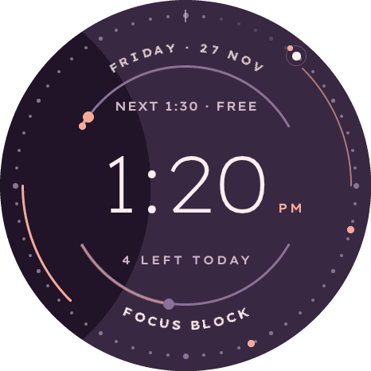
-
5:30 PM
The train is late
Urgent news floods the glass rose and wakes the device, even in quiet hours. The old time is struck through and the buttons come from your assistant.
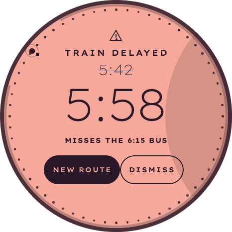
-
7:04 PM
After sunset
From sunset to sunrise the ground turns true black. One Moment is left: book club at 7:30.
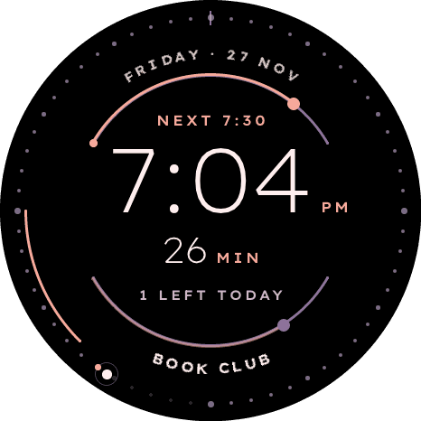
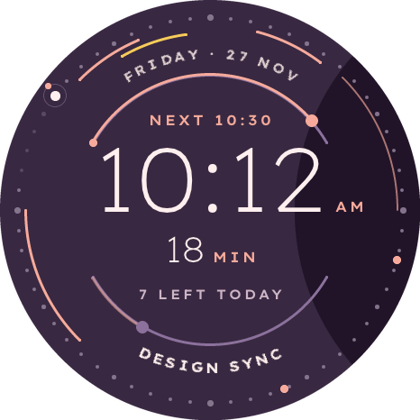
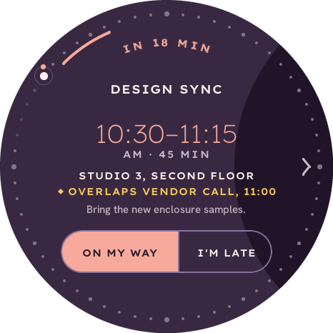
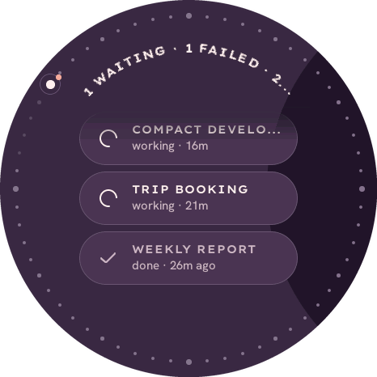
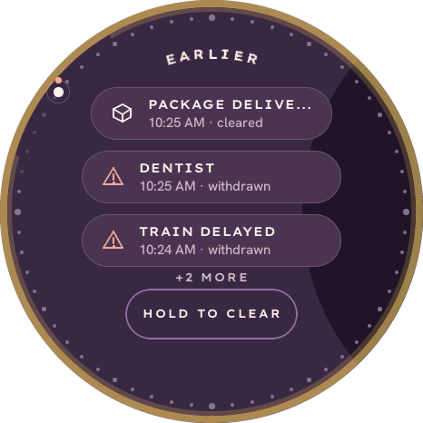
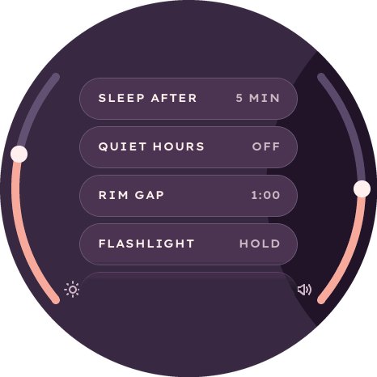
Four faces and two trays
Swipe sideways between Day, Now, Agents and Thread. From Now, swipe up for Earlier and down for Settings. Try it here with a swipe, the arrow keys or the map.
Now
Home. The clock, the next Moment with its countdown, and the day around the rim. A press of PWR always brings you back here.
Day
Every remaining Moment of today in a list that scrolls. Gaps of 30 minutes or more show as free time, and overlaps are flagged in amber.
Card
Tap a Moment for its card: the time, place, a note and up to three buttons from your assistant. Swipe sideways to step through the day, and down to close.
Agents
What your assistant is working on, sorted waiting, failed, working, then done. Tap a job to read its conversation on the Thread face.
Earlier
Alerts and notices that ended or were set aside. Tap an open one to bring it back, or hold to clear the rest.
Settings
Brightness and volume are the two arcs at the sides. The rows set the sleep timer, quiet hours, rim gap, flashlight, Wi-Fi network and link.
- Swipe left or rightChange face; inside a card, the next or previous Moment
- Swipe up on NowEarlier, or the notice waiting for you
- Swipe downSettings from Now; closes any card
- TapOpen a row, a title or a button
- Hold 0.8 sConfirm anything that sends or cannot be undone
Alerts in four weights
Everything your assistant sends is a Moment with a weight. The weight decides whether it waits on the rim, breathes a ring, or takes the glass.
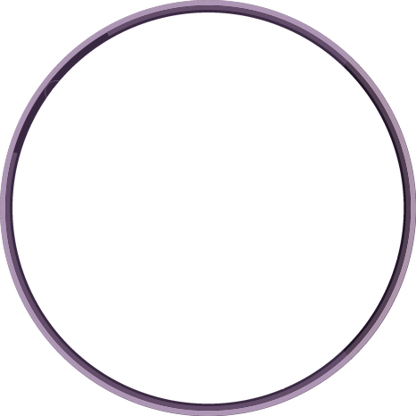
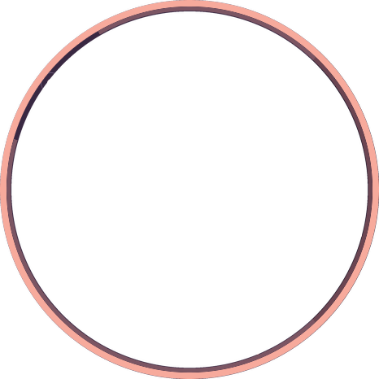
Ambient
A mark on the rim and a row on Day. It never interrupts.
Notice
A plum ring breathes slowly, once every 6 seconds, until you look. Swipe up on Now to read it. It never wakes the device.
Decision
Takes the glass with your assistant's buttons and wakes the device, except in quiet hours. Set it aside and an amber ring breathes until you answer.
Urgent
Floods the glass rose and always wakes it. The rim drains toward the deadline, one dot at a time.
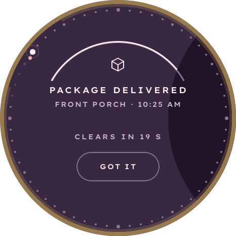
Notice
Opens with a swipe up, clears itself after 20 seconds.
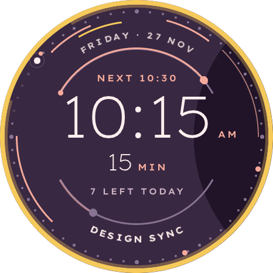
Decision, set aside
Swipe it down and Now keeps an amber ring until you answer.
Urgent
Wakes the device day or night, with what changed.
Quiet hours run from 10 PM to 6:30 AM: notices stay silent, decisions wait for you to wake the device, and urgent alerts still get through.
Talk to your assistant with one key
The Compact has two physical keys, BOOT and PWR, and two microphones. Speech goes to your assistant; replies can come back through the speaker.
- BOOT hold
- Push-to-talk. Speak, then let go to send. A press of PWR while holding cancels it.
- BOOT double-press
- Capture: record a meeting or a thought for up to two hours. Audio uploads in two-second pieces as you go, waits in flash if the network drops, and is sent for transcription.
- BOOT press
- Opens Thread, the conversation with your assistant.
- PWR press
- Back to Now from anywhere, or to sleep from Now. Hold for 3 seconds for the power menu.
- BOOT + PWR
- Takes a screenshot of the glass.
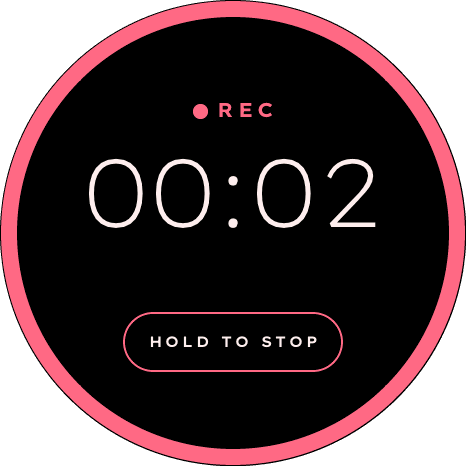
A focus timer that is the whole dial
Ask your assistant to start a round. The ring drains for 25 minutes of focus and fills back up during a 5-minute break; after four rounds comes a 15-minute long break. The timer runs on the device, with or without Wi-Fi.
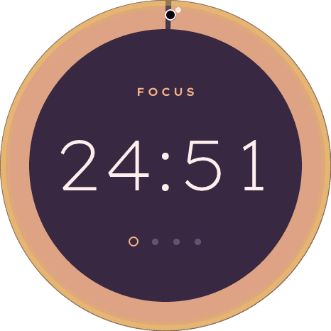
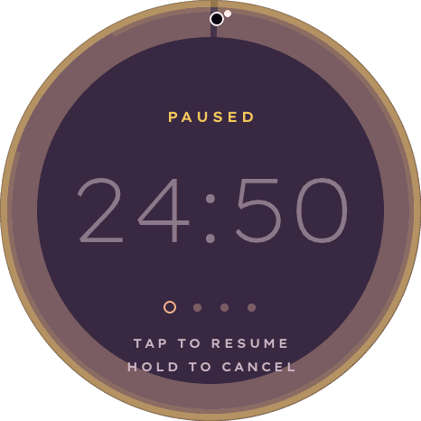
- Tap to pause or resume.
- Swipe to skip to the next phase.
- Hold 0.8 seconds to cancel.
- The last minute brightens the ring; a soft chime marks each phase end, silent in quiet hours.
- Durations are set when it starts, from 6 seconds to 99 minutes.
Wi-Fi first, your phone as backup
The Compact reaches your assistant over home Wi-Fi and can fall back to a second network, such as a phone hotspot. After 20 seconds without a link it starts Bluetooth and lets a relay app on your phone carry the connection until Wi-Fi returns.
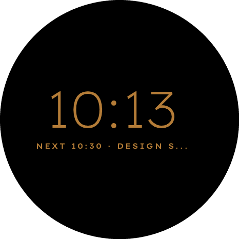
- 500 mAh battery. On battery it dims after 30 seconds, rests on a black clock after a minute, then sleeps after the time you choose.
- Plugged in, it never rests or sleeps on its own, and the charging screen estimates the time to full.
- Any key wakes it; a touch brightens a dimmed screen.
Under the hood
The Compact draws only what the bus sends it. Your assistant publishes Moments, notices and job status to the bus; taps, answers and voice go back the same way.
- Display
- 1.75-inch round AMOLED, 466 × 466, capacitive touch
- Processor
- ESP32-S3, dual core, 8 MB PSRAM
- Audio
- Two microphones and a speaker
- Power
- 500 mAh battery, USB charging, AXP2101 power chip
- Radios
- 2.4 GHz Wi-Fi with a second network for roaming, Bluetooth LE
- Board
- Waveshare ESP32-S3-Touch-AMOLED-1.75C
- Firmware
- C on ESP-IDF 5.5 with LVGL 9.5
- Updates
- Over Wi-Fi, with automatic rollback if the new version cannot reach the bus within 120 seconds
- Recording, the focus timer and the clock run on the device, so they keep going without a connection.
- A small set of commands (focus timer, wake and sleep, change face, chime, status) works over Wi-Fi or the phone link. Nothing that could strand the device, such as restarts, network changes or updates, can be sent that way.
- Anything that sends a message for you needs a held press on the glass, and the device shows SENT only after the bus confirms it.